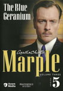
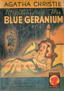
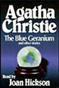

|
||
1932 - The Blue Geranium |
||
The Blue Geranium is one of The Thirteen Problems - a short story collection by Agatha Christie, first published in the UK by Collins Crime Club in June 1932 and in the US by Dodd, Mead and Company in 1933 under the title The Tuesday Club Murders. The thirteen stories feature the amateur detective Miss Marple, her nephew Raymond West and her friend Sir Henry Clithering. They are the earliest stories Christie wrote about Miss Marple. |
||
   |
||
Screen Versions |
||
While visiting her friend Dermot in Little Ambrose, Miss Marple is drawn into investigating the death of Eddie Seward, whom she'd met on the bus and who is found having apparently drowned in the river.Within a few days however, there is a second suspicious death, that of Mary Pritchard who seems to have died from fright. She was disliked by many and had recently caused a scene when her husband George was inaugurated as the Captain of the local golf club. Even Dermot disliked her as did her sister Philippa, who was once engaged to George, whom she described as the love of her life. Phillipa ended up marrying George's brother, Lewis Pritchard, and they are constantly having money problems. A third death - this time one of George Pritchard's former mistresses - convinces Inspector Somerset that George, who conveniently confesses, is the murderer. Miss Marple thinks otherwise and sets out to prove it. The short story was produced by Granada Television as a Miss Marple mystery. It was filmed at Hatfield House and featured Donald Sinden in his last screen role. |
||
 |
||
2010 |
||
Miss Marple |
- |
Julia McKenzie |
Mary Pritchard |
- |
Sharon Small |
George Pritchard |
- |
Toby Stephens |
Philippa Pritchard |
- |
Claudie Blakley |
Hester Milewater |
- |
Joanna Page |
Nurse Caroline Copling |
- |
Claire Rushbrook |
John the Gardener |
- |
Ian East |
Detective Somerset |
- |
Kevin McNally |
Clerk of the Court |
- |
Richard Betts |
Club Concierge |
- |
Derek Hutchinson |
Sir Henry Clithering |
- |
Donald Sinden |
Eddie Seward |
- |
Jason Durr |
Rev. Dermot Milewater |
- |
David Calder |
Lewis Pritchard |
- |
Paul Rhys |
Dr. Jonathan Frayn |
- |
Patrick Baladi |
Hazel Instow |
- |
Caroline Catz |
Peter Pritchard |
- |
Benjamin Harcourt |
Michael Pritchard |
- |
Thomas Harcourt |
Susan Pritchard |
- |
Molly Harcourt |
Susan Carstairs |
- |
Rebekah Manning |
Lord Justice Carmichael |
- |
Hugh Ross |
Director |
- |
David Moore |
Screenplay |
- |
Stewart Harcourt |
 |
||